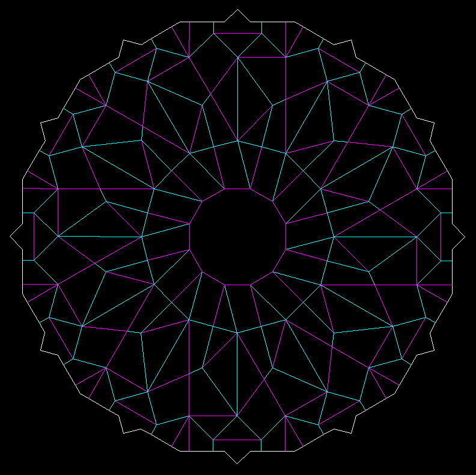
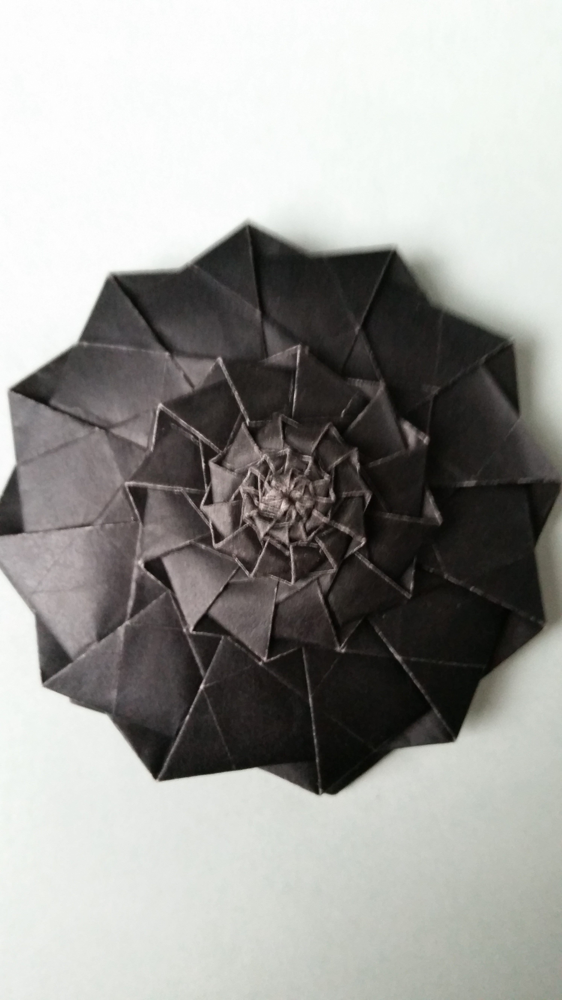
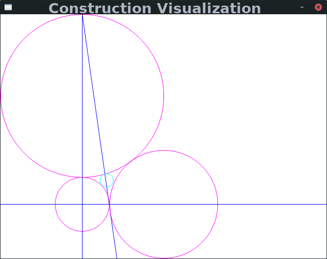
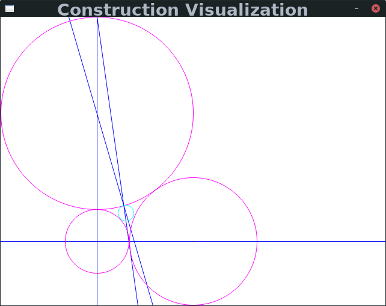
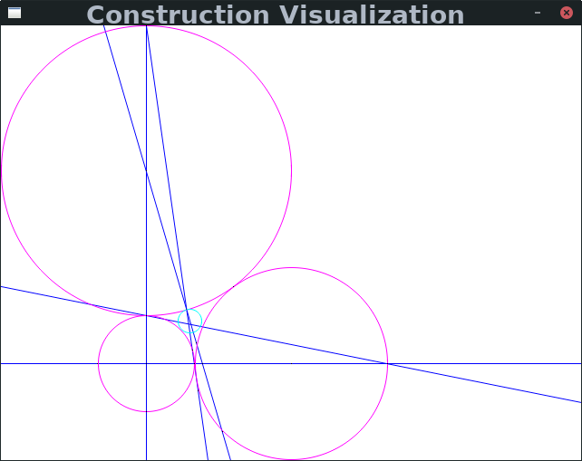
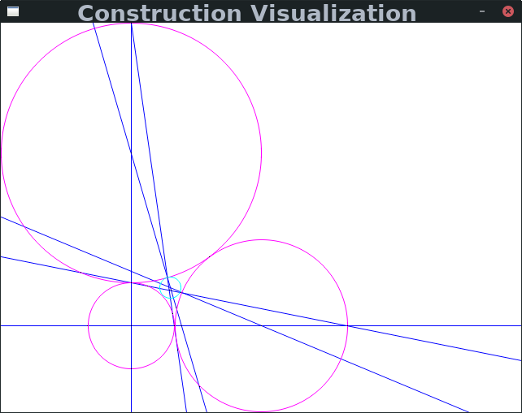

Also Check out the Problem Spotlights Page!
Current:
Crater Container Library / Number Theory Utils
The number theory utilities library includes modular arithmetic, factorization/primality testing/sieving, and polynomials over finite fields (including root finding). For factoring polynomials, Cantor–Zassenhaus with linear and quadratic specializations is implemented. For integers, trial division, Pollard Rho (with Floyd or Brent cycle finding), and Lenstra elliptic curve factorization (with Weierstrass or Montgomery curves/exponentiation) are implemented. I started this library to help with Project Euler problems, see below.
Origami Tesselation Planner (GTess)
This probably looks like a difficult design problem, but it is even harder than it appears. Twists in origami tesselations are radially symmetric pleat intersections where all the pleats lie in the same direction clockwise or counterclockwise around a central point, but this means that if a pleat joins two twists then the twists must rotate in opposite directions. While a twist may have 3 or more sides, only twists with 7 or more can be modified into Flower Towers (12 is standard however). Thus, the twists must correspond to a planar tiling by regular polygons with an even number at each vertex and some polygons having 7 or more sides. A good candidate would be a 4.6.12 tiling (a square, hexagon, and dodecagon meeting at each vertex) with the hexagon split into 6 triangles. Another possibility besides directly incorporating dodecagonal twists into a tesselation is to split every other pleat to get 6 sets of stacked pleats instead of 12 single pleats. This would allow a simpler tiling, such as the 3.6 tiling, to be used. Finally, the pleats could each be split so as to be directionless and remove the restriction of needing twists connected by a pleat to have opposite directions. This would allow a tiling such as 3.12.12 to work.
Trying to design this tesselation has made me acutely aware that there is no suitable origami tesselation planner (at least, not one known to me). While some tools, even some I'm familiar with such as AutoCAD, could be coaxed into working, I would like to have a more origami focused solution.
|  |
Left: the crease pattern and twist boundary of a single 12-sided flower tower with 1 layer. Magenta indicates mountain folds, cyan indicates valley folds,
and white indicates the twist boundary, the extent of the area occupied by the folded up result projected down onto the unfolded crease pattern. This crease pattern is using the
third approach mentioned above for tesselation.
Right: a single folded flower tower with 4 layers. |
 |
Right: a single folded flower tower with 4 layers.
Project Euler
 I have been programming since the beginning of high school and doing math for even longer, so Project Euler was one of the first things that got me into programming
and I still solve problems to this day. This is a great resource with a lot of very interesting problems, and anyone who enjoys math or computer science can surely
find something to enjoy and even learn from here.
I have been programming since the beginning of high school and doing math for even longer, so Project Euler was one of the first things that got me into programming
and I still solve problems to this day. This is a great resource with a lot of very interesting problems, and anyone who enjoys math or computer science can surely
find something to enjoy and even learn from here.
Past:
Rewriting Recursive Functions
However, for pure functions we can view the recursive calls made as a lattice which allows us to generalize the technique of memoization we would use for functions like Fibonacci that have a one dimensional index. A surprisingly large number of problems can be interpreted as pure, bounded recursive functions. Modular arithmetic means we can cook up fairly complicated functions (ie where the recursive dependency depends on some polynomial of some inputs mod some integer) which can be rewritten in this way. In general, this rewriting can be thought of as chopping the lattice of recursive calls up into layers, and evaluating layer by layer to avoid recomputation and minimize memory consumption.
For single parameter functions (or sometimes functions with a few parameters, all but one of which can take on only a handful of values), we can do even better by applying linear algebra techniques. There is the fairly well known method of converting the problem to a matrix exponentiation and computing it by repeated squaring, but we can do even better by interpreting the matrix as a polynomial in the ring of polynomials mod its minimal polynomial.
This was my first research project at Georgia Tech with Professor Qirun Zhang. I presented it at the Student Research Competition at POPL 2020.
Origami Simulator
Here, I created a physics based simulation for origami models that takes a crease pattern with assigned edge angles and simulates folding it up by treating the edges as springs. With no other influence the energy would be split into net kinetic energy and a complicated oscillator. Thus every few frames of the simulation I remove net kinetic energy, and I include simulated friction to ensure energy decreases.
Check out this rough demo! (Click to start/stop)
Here is a report on how it works. This was my final project for my convex optimization class, although it also draws on my physics
knowledge and love for origami.
Apollonian Circle Constructability
Since this problem was introduced by the ancient Greeks, it has been known that the fourth tangent circle is constructable via compass and straightedge. However, the minimum number of steps needed was not known. Professor Alex Kontorovich, my mentor for this project, found a 7 step construction.
I used a computer search to show that there are no six step constructions, assuming that using arbitrary points does not help in this case. There are somewhere in the ballpark of 18 quintillion possible six step constructions from all the features in the initial three circle configuration, but we know in order to draw the fourth circle at step six we will need its center and a point on its circumference after step five, so we need a feature through the center after step four, which lets us filter out the vast vast majority of possible constructions after four steps when there are only about 300 million. My computer search also found and verified a 3 step construction for the equilateral case, 5 for the isosceles case, and 6 for the right triangle case (considering the triangle formed by the centers of the initial circles), the last of which was new.
Here is a presentation.
Here is some code.
|  |  |  |  |
Parser Library with calculator and Lisp interpreter
The generate C code is then compiled into a shared library so that a driver program can dynamically select what parser to use at runtime to turn the input text into an AST, and also what callback to send the AST to from a second shared library. The project has a calculator and a lisp interpreter implemented in this way.
SDL2 Demos
Simple risc cpu emulator
Lock free multiple in/out queue
Enter lock free data structures. Through careful use of atomic compare and swap instructions and memory fences, any true locking can be avoided while still providing thread safe data structures. Queues (circular buffers) are especially good candidates for making lock free because they are simpler than self balancing trees and also ubiquitously used to send jobs or other data from "producer" threads to "consumer" threads.